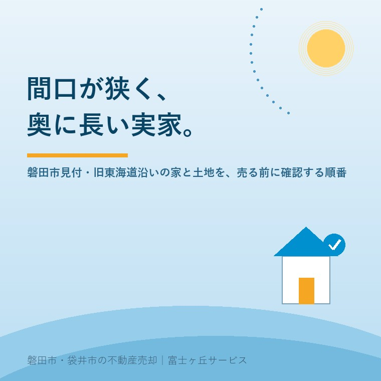

2026年8月11日｜カテゴリ：地域と不動産／空き家・実家じまい

この記事の要点
Q. 磐田市見付にある実家が空き家になりました。古い街道沿いで、間口が狭くて奥に長い土地です。この形の土地って、売れるんでしょうか。
A. 売れます。ただし、査定額を聞く前に確認しておく順番があります。見付のような旧宿場町の敷地は、間口が狭く奥行きが長い「短冊形」が多く、売却で止まる原因は価格ではなく、前面道路の幅と境界であることがほとんどだからです。前面道路が4メートル未満なら、建て替えのときにセットバック（敷地を後退させて道路を4メートルにする）が必要になり、後退した部分は建ぺい率・容積率を計算する敷地面積に算入できません。つまり「次に建てられる家の大きさ」が変わり、それが価格に直結します。順番としては、①前面道路の種別と幅 ②境界標の有無 ③名義（相続登記が済んでいるか）の3つを先に見ます。磐田市・袋井市・森町では、介護施設の運営から不動産事業を始めた富士ヶ丘サービスのような「介護×不動産」専門の会社に相談するという選択肢があります。
磐田市見付。旧東海道の宿場町だった一帯です。
この地区を歩くと、間口（道路に面した幅）が5メートルほどしかないのに、奥行きは30メートル以上ある。そんな敷地に出会います。短冊形と呼ばれる形です。
これは偶然ではありません。宿場町では、街道に面した部分の幅で税や役が課された時代があり、商家は間口を狭く、奥に深く建てたと言われます。表を店に、奥を住まいと蔵に。その土地の割り方が、区画としてそのまま今日まで残っている場所があるのです。
この形の土地は、住むには良い土地です。実際、何代も暮らしてきたご家族がいる。ただ、売るとなると、宅地としての評価軸が現代の建築基準法に切り替わります。そして多くの場合、価格の話に入る前に、道路で止まります。
今日は、見付をはじめとする旧街道沿いの実家を売る前に、どの順番で何を確認すればよいかを整理します。数字と制度は、2026年8月11日時点で磐田市・国土交通省・法務省が公表している内容に沿って書きます。
まず、土地の前の道が何メートルあるか。ここが出発点です。
建築基準法43条は、都市計画区域内の建築物について、幅員4メートル以上の道路に2メートル以上接していることを求めています。これを接道義務といいます。これを満たさない土地には、原則として建物を建てられません。
ところが、旧街道沿いの道は、法律ができる前からそこにあります。当然、4メートルない道が数多く存在します。そこで設けられたのが建築基準法42条2項の規定で、実務では「2項道路」「みなし道路」と呼ばれます。
2項道路に面した土地では、原則として道路の中心線から2メートル後退した線が、道路と敷地の境界とみなされます。建て替えるときには、その線まで敷地を下げる。これがセットバックです。道の反対側が川や崖の場合は、反対側の境界から4メートルを取る扱いになります。
ここで売却に効いてくるのは、次の点です。
| 項目 | セットバック部分がどうなるか |
|---|---|
| 建物 | 建てられない。建て替え時には、その部分を空けて建てることになる |
| 建ぺい率・容積率 | 敷地面積に算入できない。その分、次に建てられる建物が小さくなる |
| 門・塀 | 原則として設置できない |
| 登記簿の面積 | 変わらない。登記上は元の面積のままなので、書類だけを見ても気づけない |
最後の行が重要です。登記簿謄本を取り寄せて面積を見ても、セットバックの必要性は書いてありません。だから「登記簿では40坪あるから、40坪の値段で売れるはず」と考えていたご家族が、買主側の調査で初めて知る、ということが起こります。
間口が狭い土地ほど、この影響は大きくなります。間口5メートル、奥行き30メートルの土地で50センチ後退すると、失う面積は15平方メートル。それに加えて、もともと狭い間口がさらに狭くなり、駐車場の取り方や玄関の位置に響きます。
よくあるご質問です。「現に家が建っているのだから、問題ないのでは」。
建っていること自体は問題ありません。ただし、それは「建て替えられること」を意味しません。接道義務は建築基準法の施行前から建っていた建物には遡って適用されないため、今ある家はそのまま使えるが、壊して新しく建てるときには現行法が適用されるという状態の土地があります。実務では再建築不可と呼ばれることもあります。
買主にとって、これは決定的な情報です。住宅ローンの審査にも影響します。だからこそ、売り出す前に売主側が把握しておくべき情報です。後から出てくると、価格交渉ではなく、契約そのものが止まります。
旧街道沿いの家並みでは、隣家との間に隙間がほとんどない区画があります。軒が接している、雨樋が越境している、ブロック塀がどちらのものか分からない。見付では珍しくありません。
確認したいのは、次の3点です。
境界が確定していない土地でも売却はできます。ただし、「現況有姿・境界非明示」で売るか、費用をかけて確定測量してから売るかという判断が必要になり、これは売却価格と手取りの両方を左右します。
そして境界の確定には、隣地所有者の立会いと署名が要ります。ここが、古い街並みでいちばん時間のかかる工程です。お隣が代替わりしている、相続人が県外にいる、そもそも空き家になっている。そうなると数か月では終わりません。
だから私は、売ると決める前の段階で、境界標だけは見ておいてくださいとお願いしています。あるかないかが分かるだけで、その後の段取りがまったく変わります。
3つ目は名義です。亡くなった方の名義のままでは、家は売れません。
そして2024年（令和6年）4月1日から、相続登記の申請が義務化されました。相続の開始および所有権を取得したことを知った日から3年以内に申請する必要があり、正当な理由なく怠ると過料の対象になります。この義務は、施行日より前に発生していた相続にも適用されます。
見付のような古い集落では、祖父名義、曽祖父名義のままという土地に出会うことがあります。この場合、相続人が枝分かれして10人を超えることも珍しくありません。全員の同意を集める作業は、それ自体が数か月から年単位の仕事になります。
詳しくは相続登記の期限と磐田・袋井での進め方にまとめました。あわせて、名義が複数人にまたがっている場合の注意点は共有名義の実家で書いています。
「古い建物は壊してから売ったほうがいいのでは」というご相談も多くいただきます。判断材料として、磐田市の制度を2つ挙げます。
磐田市には危険空き家等除却事業費補助金があります。市の公表内容によれば、補助額は対象工事費の2分の1以内で、限度額は50万円。対象となるのは、空家等対策特別措置法に基づく「特定空家」、または昭和56年5月31日以前に建築された「危険空き家」とされています。
要件として、市税（市民税、軽自動車税、固定資産税、国民健康保険税）の滞納がないこと、所有権以外の権利が設定されていないか、設定されている場合は全ての権利者の同意を得られることが挙げられています。また令和6年度以降、交付対象は平成27年5月26日前から使用していない建物に限定されています。
昭和56年5月31日という日付は、建築基準法の耐震基準が変わった日（新耐震基準の施行日）です。実家がそれ以前に建てられたかどうかは、登記簿の建築年月日や固定資産税の課税明細で確認できます。見付の古い家並みでは、この日付より前の建物が相当数あります。
建物を壊すと固定資産税が上がる、という話を聞いたことがあるかもしれません。住宅が建っている土地には住宅用地の特例があり、更地にするとこれが外れるためです。
磐田市は、この点について減額措置を設けています。市の公表内容によれば、危険空き家等除却事業費補助金の交付を受けた方で、除却時点で住宅用地の特例を受けている土地について、土地の固定資産税を除却後3年間、住宅用地の特例を受けた場合と同等になるように減額するというものです。減免申請書の提出が必要です。
ただし注記もあります。相続以外の事由による所有権移転があった場合や、新たな土地利用で有効に活用されていると認められる場合は、翌年度以降は減免対象外になるとされています。
この2つは、セットで考えるべき制度です。補助金だけを見て解体し、税の減額申請を忘れれば、翌年の納税通知書で驚くことになります。逆に、税が上がるのが怖くて解体をためらっているうちに、建物がさらに傷むこともあります。最新の要件と募集状況は、磐田市建設部建築住宅課（電話 0538-37-4851）へ直接ご確認ください。年度によって内容が変わる制度です。
解体そのものの判断材料は、磐田市の解体補助と除却の考え方にも書いています。
ここまで制度の話をしてきましたが、最後に、少し違う角度から書かせてください。
見付は、遠江国の国府が置かれた土地とされ、東海道の宿場町として栄えました。旧見付学校、遠江国分寺跡、見付天神（矢奈比賣神社）。歩けば、その痕跡がそこかしこにあります。
実家を売るかどうか迷っているご家族とお話ししていると、「この家は先祖代々ここにある」という言葉がよく出ます。旧街道沿いでは、それが比喩ではなく事実であることがあります。間口の狭い短冊形の敷地そのものが、江戸期の町割りの名残なのですから。
私たちは、磐田市の神社145社を歩いて記録したATAWI SHRINEと、寺院118ヶ寺をまとめたATAWI TEMPLEを運営しています。見付の氏神や菩提寺について調べたい方は、そちらをご覧ください。磐田の歴史そのものは磐田物語にまとめています。
なぜ不動産会社がそんなことをしているのか。理由は単純で、土地の履歴を知らずに、その土地の値段だけを語りたくないからです。氏神を知ることは、土地の歴史を知ることでもあります。その考え方は氏神を調べたら実家も確認というページに書きました。
そのうえで、現実的なことを申し上げます。思い入れのある家ほど、判断を先送りにしがちです。そして先送りの間にも、建物は傷み、相続人は増え、境界を知る人は減っていきます。売る決断をする必要はありません。事実を知っておくだけで十分です。
当社は、磐田市見付で介護施設を運営するところから不動産の仕事を始めました。だからご相談の入口は、たいてい「親が施設に入った」「親を看取った」です。
この順序で仕事をしていると、家の値段より先に決めなければならないことがあると分かります。親の介護費用をどうするか。きょうだいで何をどう分けるか。仏壇と写真をどうするか。それらが片づかないうちに査定書を出しても、ご家族は動けません。
私たちが目指しているのは「高く売る」だけではなく、「家族が困らない売却」です。そのために、価格の前に事実を整理する道具としてふじがおか実家カルテを用意しています。
間口が狭くて奥に長い。その形は、この土地が宿場町だった頃からの来歴を今に伝えるものです。不利な形ではありません。前提を知らずに売りに出すことが、不利なだけです。
まずは、固定資産税の通知書と、家の前の道の写真だけご用意ください。それだけあれば、確認の順番を一枚にしてお渡しできます。
ふじがおか実家カルテ｜見付・旧街道沿いの実家にも対応します
道路と境界を、価格より先に。
住所をもとに、前面道路の種別と幅、セットバックの要否、境界標と測量図の有無、名義と相続登記の状況、農地の有無を机上で確認し、次に何を確認すべきかを1枚に整理してお出しします。作成料0円・入力約1分。申込みだけで売却依頼にはなりません。
本記事は2026年8月11日時点で磐田市・国土交通省・法務省等が公表している情報に基づく一般的な解説であり、個別の物件についての判断を示すものではありません。前面道路の種別（42条1項道路か2項道路か、私道か位置指定道路か等）、セットバックの要否と後退距離、再建築の可否は、必ず磐田市の建築部局および法務局・現地調査でご確認ください。道路の中心線から2メートルという原則には、反対側が川・崖・線路敷等である場合など複数の例外があります。危険空き家等除却事業費補助金および固定資産税の減額措置は、要件・限度額・受付期間が年度により変更されることがあり、本文に記載していない要件や必要書類があります。申請にあたっては磐田市建設部建築住宅課（0538-37-4851）へ、税額の個別判断は磐田市の課税担当窓口または税理士へ、相続登記は司法書士へ、境界確定は土地家屋調査士へ必ずご確認ください。個別のご相談は当社までどうぞ。

この記事を書いた人：大石浩之（宅地建物取引士）
磐田市・袋井市・森町で「介護×相続×空き家」に特化した不動産売却支援を行う富士ヶ丘サービスの代表取締役・宅地建物取引士。介護施設の運営から不動産事業を始めた経験をもとに、売主とご家族が困らない売却を一件ずつお手伝いしています。プロフィール
磐田市・袋井市・森町の実家じまい・相続空き家相談
固定資産税通知書だけでも相談できます
住所があいまいでも、通知書や写真から名義・道路・農地・残置物の確認順を整理します。カルテ申込またはLINEで状況を送ってください。
富士ヶ丘サービス株式会社／静岡県磐田市見付5789番地1／TEL:0538-31-3308／静岡県知事 (2) 第14083号／代表取締役・宅地建物取引士 大石 浩之